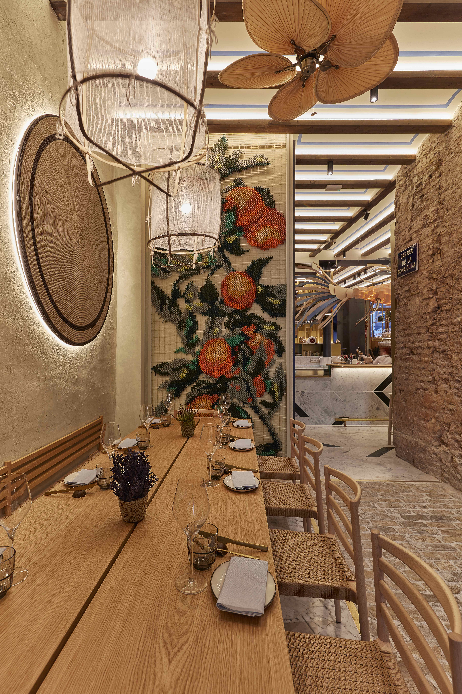
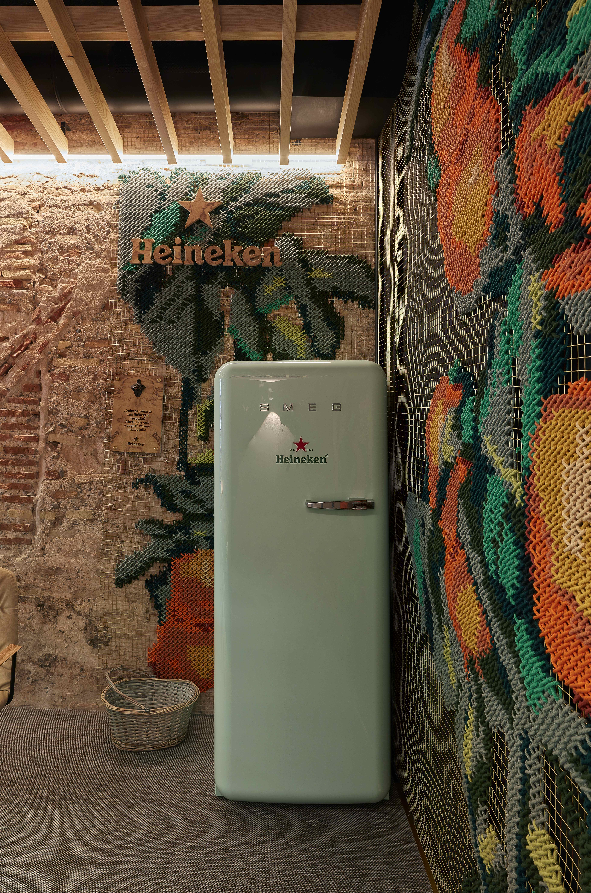
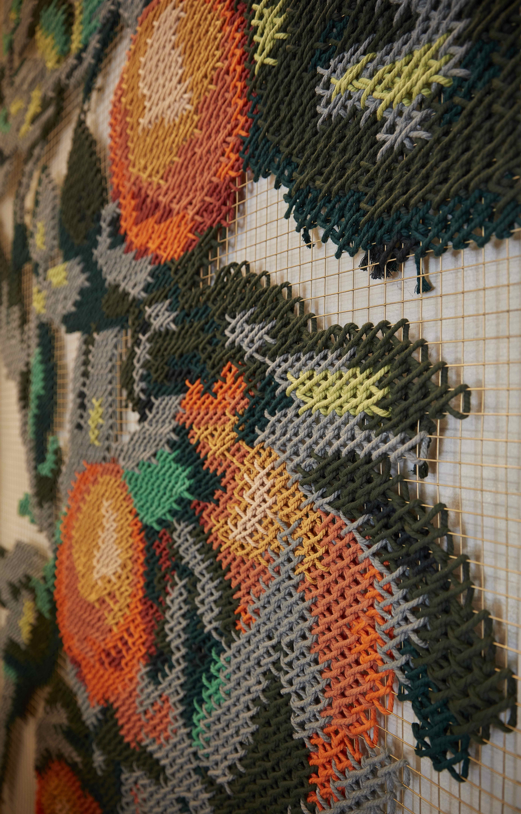
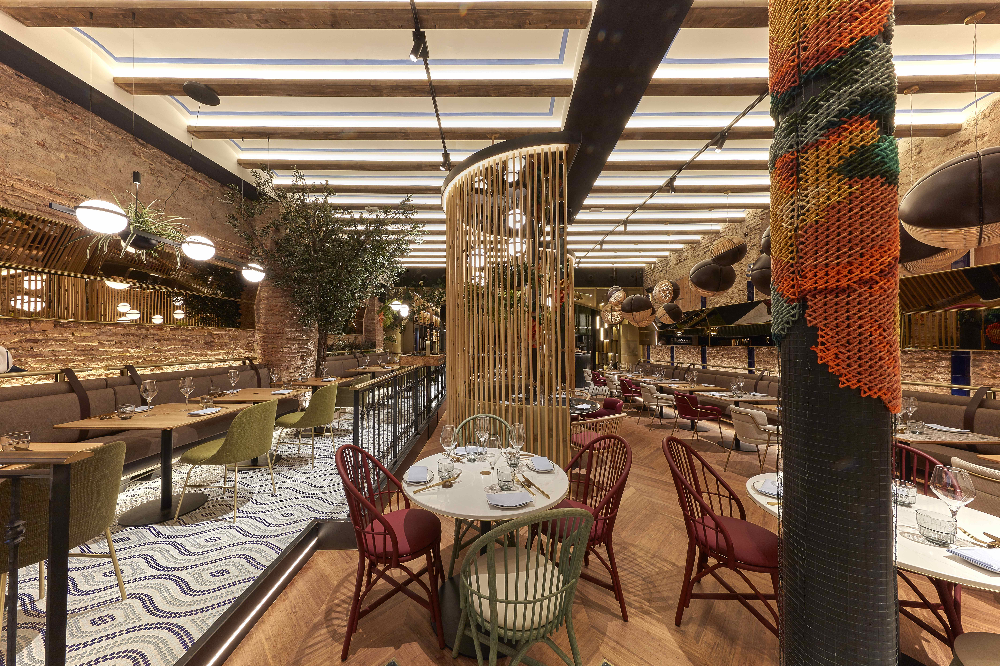

Interior Design · Grupo Gastro Trinquet
Vaqueta
Gastro Mercat
Scroll
Vaqueta Gastro Mercat opened in May 2019 opposite Valencia's Central Market — a restaurant that begins with a greengrocer's, as a declaration of intent: here, the product comes first.
The name comes from two Valencian icons: the caracol vaqueta, the native snail, and the leather used in pilota valenciana. A place rooted in the city, its market, its land.
Arquicostura was part of Vaqueta from the beginning. Embroidered orange trees welcome you at the entrance — and upstairs, in the show-cooking room, we wrapped the columns for the first time, turning the structural barriers of the space into artistic canvases.




